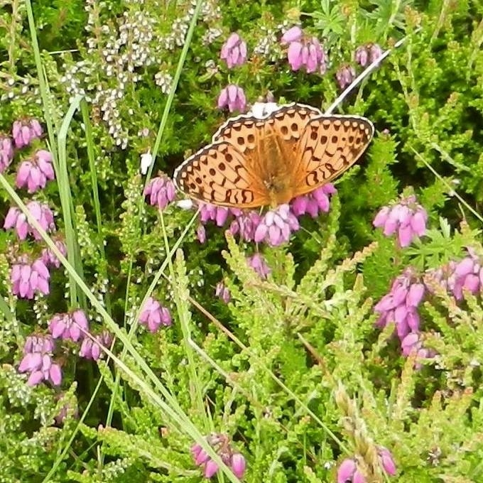
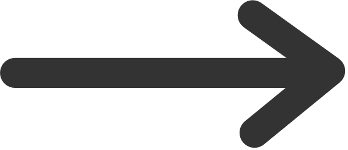

Before cropping


After cropping
Welcome {{ g.user.username }} to butterfly cropping.
{% else %}This is the beta version of the site, with only thirty sample images to crop. Please let me (Michael) know about:
Thanks a lot!
By taking part in this project, you can help us transform images containing a butterfly into an image of just a butterfly:
Before cropping
After cropping
These cropped images are important data for tools we are building to help ecologists answer questions about biodiversity.
Use the menu above to look at the leaderboard and to read more about the project.
{% if g.user.is_authenticated%}Then, click here to get started
{% else %}Then, please register or log in to take part in the cropping effort.
{% endif %} {% endblock %}